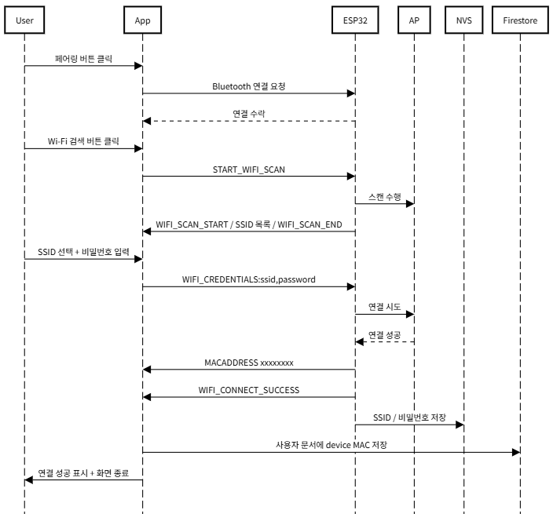
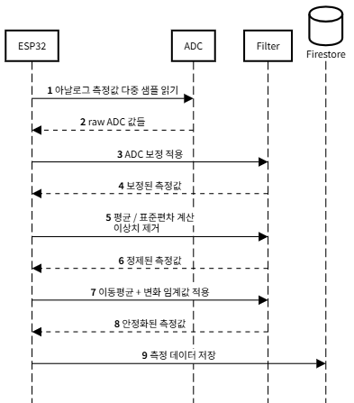
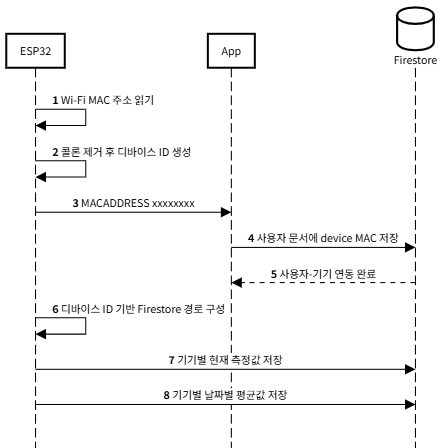

- IoT 기기의 초기 설정 과정에서 Wi-Fi 자격 증명을 직접 입력하거나 펌웨어를 수정해야 하는 불편함이 있었음
- ESP32에 Bluetooth Serial 기반 설정 모드를 구현해 앱에서 주변 Wi-Fi 목록을 스캔할 수 있도록 구성했습니다.
- 앱에서 입력한 SSID와 비밀번호를 ESP32로 전달하고, 연결 성공·실패 결과를 다시 앱으로 전송하도록 구현했습니다.
- 연결에 성공한 자격 증명은 Preferences에 저장해 재부팅 이후에도 자동 재연결되도록 설계했습니다.
- 초기 설치와 네트워크 변경을 앱 중심으로 처리할 수 있어 설정 절차를 단순화했습니다.
- 별도 펌웨어 수정 없이 Wi-Fi 환경 변경에 대응할 수 있는 사용자 친화적 설정 방식을 마련했습니다.
- 기기 등록과 네트워크 연결 흐름이 정리되면서 실제 사용 가능한 IoT 디바이스 형태로 완성도를 높였습니다.

- 아날로그 기반 측정값은 노이즈와 순간적인 값 튐으로 인해 결과가 쉽게 흔들릴 수 있었습니다.
- 단일 샘플 기준으로 상태를 판단하면 실제 상태와 다른 값이 기록될 가능성이 있었습니다.
- 불안정한 측정값은 서버에 저장되는 데이터의 신뢰도를 낮추고 모니터링 품질에도 영향을 줄 수 있었습니다.
- ADC 보정을 적용해 원시 ADC 값을 실제 전압에 더 가깝게 변환하도록 구성했습니다.
- 다중 샘플링 후 평균과 표준편차를 계산하고, 이상치를 제외한 값만 반영해 측정값을 정제했습니다.
- 이동평균과 작은 변동 무시 로직을 적용해 측정값이 불필요하게 흔들리지 않도록 했습니다.
- 측정값의 급격한 흔들림을 줄여 더 일관된 값으로 해석할 수 있도록 개선했습니다.
- 순간적인 노이즈에 덜 영향을 받는 측정 구조를 만들어 저장 데이터의 신뢰도를 높였습니다.

- 여러 스마트화분 기기를 함께 사용할 경우 센서 데이터가 섞이면 기기별 상태를 구분하기 어려웠습니다.
- 사용자 입장에서는 어떤 데이터가 어느 디바이스에서 수집된 것인지 명확히 관리할 수 있는 구조가 필요했습니다.
- ESP32의 MAC 주소를 정제해 디바이스 식별자로 활용하고, Firestore 경로를 기기별로 분리해 저장하도록 설계했습니다.
- 앱에서는 연결된 기기의 MAC 주소를 사용자 계정과 연동해 기기 등록 흐름을 구성했습니다.
- 기기별 센서 데이터와 이력을 분리 관리할 수 있는 구조를 마련했습니다.
